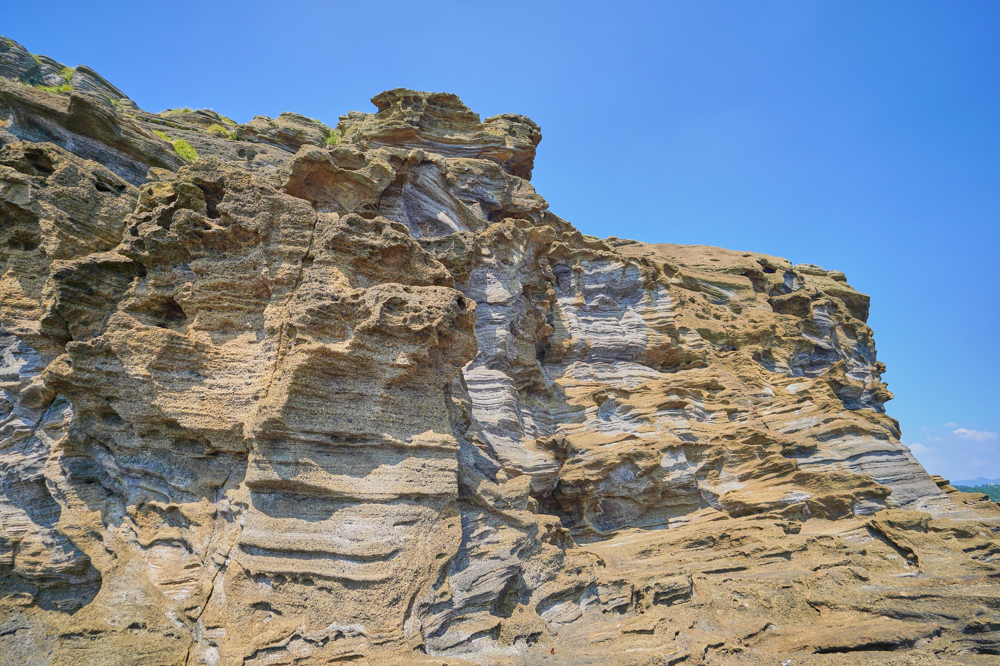
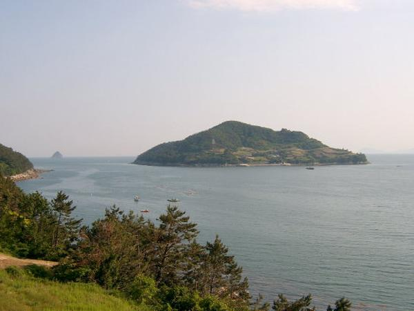
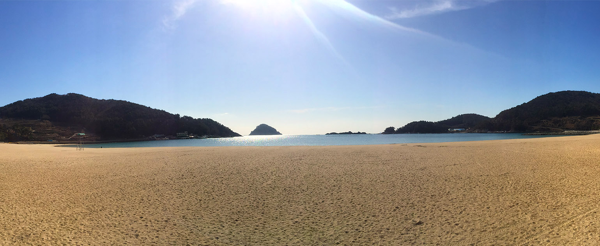
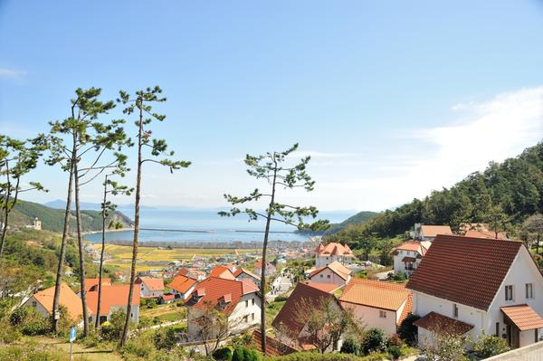
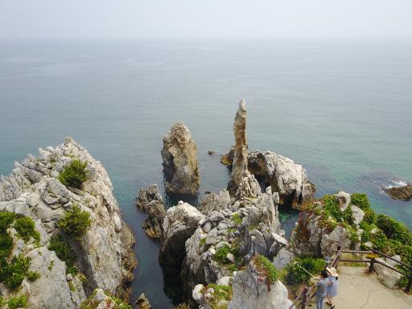

제주도 용머리 해안
구불구불한 암석의 굴곡과 겹겹이 쌓인 여러 색깔의 층 모두 근사했습니다. 제주도에 볼거리가 많지만 저에게는 이 곳이 최고입니다.
제주도 주상절리
이 곳도 용머리해안만큼이나 멋있었습니다. 나무젓가락 여러 개가 모인 듯한 비주얼이 신기했습니다.
남해군 해안선
아말피 코스트 못지않은 해안선이라고 남해군에서 홍보하는 전단지를 보았는데 그 말 그대로였습니다. 아주 작은 섬이 옹기종기 모여서 아름다웠습니다.
남해군 은모래비치
남해군답게 해안에 작은 섬이 있어서 아름다운 경관을 자랑하는 해변가였습니다. 모래가 작고 고와서 신발 벗고 걷기 적당했습니다.
남해군 독일마을
독일에서 살던 교포들이 귀국해서 형성한 독일마을은 이색적인 건물 때문에 볼만했습니다.
동해시 촛대바위
강원도 동해시에 있는 촛대바위 역시 기이한 암석 덕분에 아름다웠습니다.
광주시 화담숲 1
경기도 광주시에 있는 화담숲은 여러 테마의 숲이 있어 좋았습니다. 자작나무숲, 소나무숲 등이 기억에 남습니다.